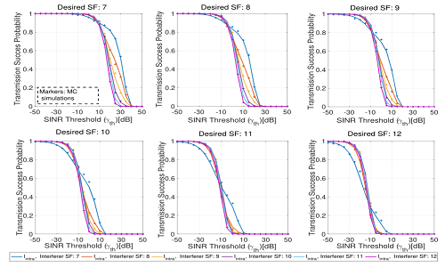

Different from NB-IoT which inherits the networking stack of conventional mature cellular networks , LoRa uses license-free spectrum , an unplanned deployment model, a patented spread spectrum modulation technique and a number of tune-able technical parameters. While these characteristics provide LoRa with a flexibility to cope with different IoT applications and scenarios, they bring more complexity to its performance analysis and make its optimisation a more challenging task. It is with this context that this project is conducted.
Main Contributors

Primary Research Issues
Spatio-Temporal Modelling and Performance Analysis
Modelling and performance analysis of Low-Power Wide-Area (LPWA) networks are essential for largescale dense Internet-of-Things (IoT) deployments. They allow to characterise the behaviour of the network, predict its performance, identify the factors and scenarios to guarantee certain Quality of Service, and hence gain better insights about the optimisation and redesign of the technology. A meticulous model should be able to depict the technology in a realistic way. Such meticulousness entails; the choice of stochastic point process to reflect the spatial distribution of the nodes, the considered medium access technique, the characterization of the node queue’s temporal evolution, and the interference dynamic. This project aims at studying large scale LoRa networks by jointly using stochastic-geometry and Queuing theory-based analysis.
LoRa Imperfect Orthogonality
Several studies have looked into LoRa performance analysis and optimization. However, most of these studies assume perfect SF-orthogonality and almost exclusively limit their investigations to the impact of interference coming from the nodes using the same SF. From this perspective, a LoRa network can be interpreted as the aggregation of independent sub-networks, each operating in a different independent SF. The assumption of perfect orthogonality commonly used has been recently questioned and the community starts to rather talk about quasi and non-perfect orthogonality. This project aims to study LoRa spread spectrum modulation, investigate the correlation of its waveforms and characterize its imperfect orthogonality.
Related Publications
- Y. Bouazizi F. Benkhelifa and J. McCann, “Spatiotemporal Modelling of Multi-Gateway LoRa Networks with Imperfect SF Orthogonality" (Accepted at Globcom 2020 , not yet published).